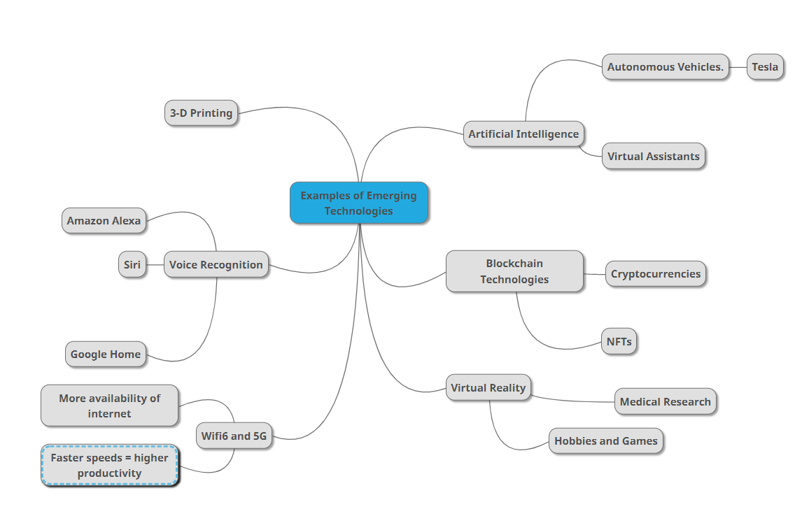

User Interface (UI)
Simply put, user interface (UI) refers to any aspect of a digital product or service that a user interacts with. Everything from displays and touchscreens to keyboards, audio, and even lighting falls under this category.

Simply put, user interface (UI) refers to any aspect of a digital product or service that a user interacts with. Everything from displays and touchscreens to keyboards, audio, and even lighting falls under this category.
The user experience is how a user interacts with and experiences a product, system or service. It encompasses a person's views on usefulness, usability, and efficiency.

UI is made up of all the pieces that allow someone to engage with a product or service at its most basic level. The user experience, on the other hand, is what the person using the product or service gets out of the whole thing.
UI vs UX Song (made by me)
Examples of Emerging Technology Mindmap
Blockchain is a digital technology that stores, validates, and preserves transactions over a network of computers using a set of agreed-upon rules. This eliminates the requirement for central authority verification, such as by a bank. To keep transactions safe, cryptography is used, and expenses are shared among network participants. The fact that all network participants can see and verify transaction history provides for significantly higher degrees of openness and auditability than would otherwise be achievable. Despite the fact that blockchain is still a new technology, it can be used in a wide range of businesses and for nearly any transaction involving money.
Automation and machine learning, which support applications like natural language processing (Apple Siri or Amazon Alexa), computer vision (Tesla Autopilot), and optimisation and decision assistance, are at the heart of AI (Google Maps). AI has the ability to automate tedious or dangerous labour, boost productivity, and enable the creation of new consumer products. In the following decades, it is expected to bring trillions of dollars to the global economy. Here are several examples: Advanced data analytics techniques are being used to diagnose diseases at an earlier and more curable stage. Increasing productivity and lowering worker dangers by using automated machines for transporting and drilling on mining sites. Increasing the use of smart forms that can modify legal information to help people create wills or settle financial arrangements after a death.
Quantum computing is a new technology that promises to dramatically boost computing power, allowing us to solve issues that current computers can't handle. Quantum computers will be able to crack codes quickly, posing a threat to existing security systems that rely on encrypted data, such as those used in banking and other industries. Quantum computers have scientific uses as well, and they may be able to answer questions that have perplexed scientists for years.
Examples of Emerging Technology